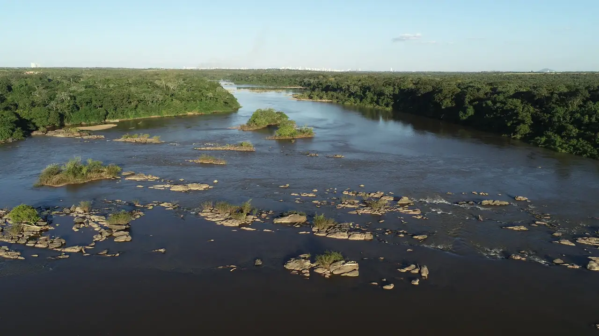
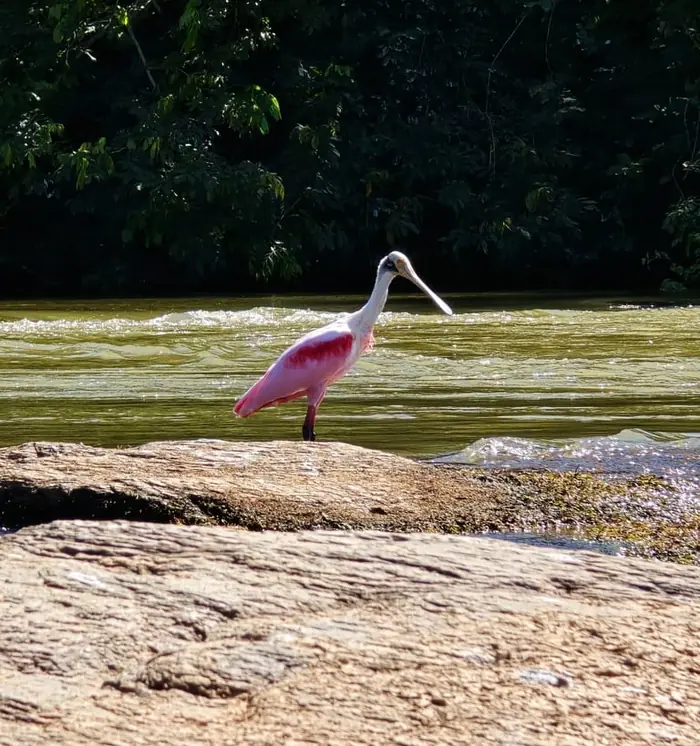
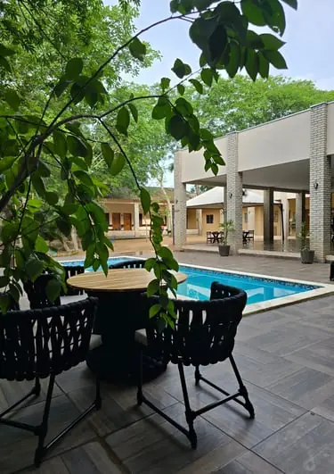
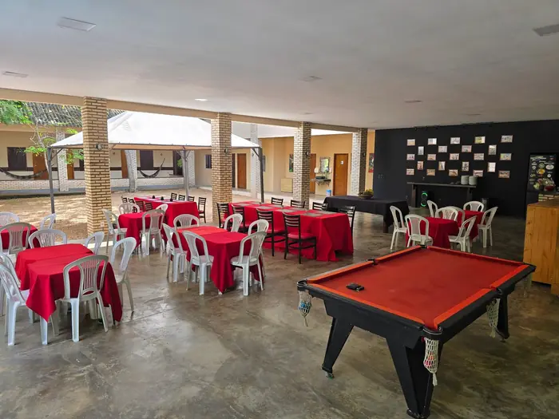
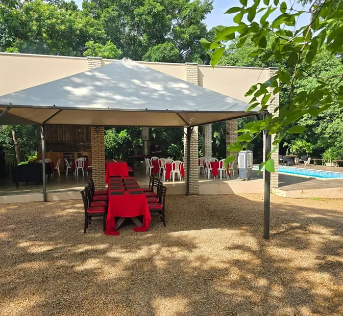
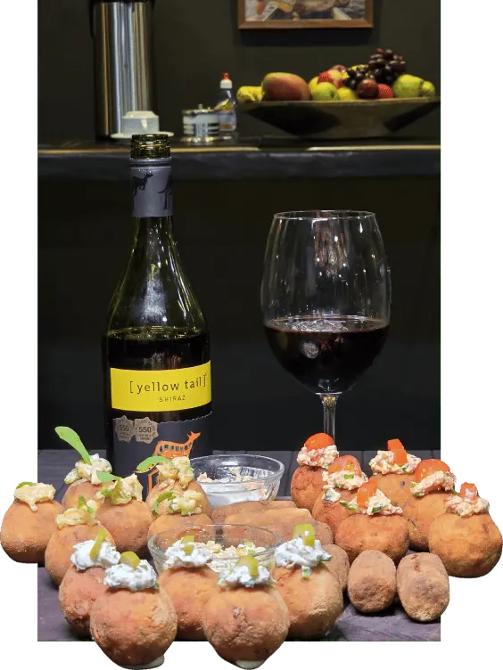
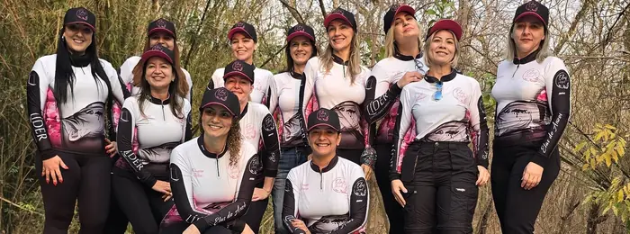

20 km do aeroporto Marechal RondonAll inclusive com bebidas100% pesque e solte
26anos de rio
Quem te leva para pescar aqui trabalha neste rio há 26 anos e preside a Associação Nacional de Pesca Esportiva há 7. Cada pedra, cada corredeira e cada poço tem nome e dono.
20 kmDo aeroporto
12 kmDo centro de Cuiabá
50 kmDe rio para pescar
150+Aves catalogadas
0Trecho de barco

Por que o Rio Cuiabá Lodge
Mais tempo pescando, menos tempo chegando
Toda pousada de pesca do Pantanal Norte pede de uma a três horas de estrada, e quase sempre mais um trecho de barco. Aqui você sai do aeroporto e em 20 minutos está na pousada.
Chega e já está pescando
20 km do aeroporto, 12 km do centro. Zero transbordo, zero trecho de barco, zero dia perdido em estrada.
Rio reservado de verdade
Pedras, corredeiras e cachoeiras limitam a navegação a quem conhece as passagens. Não há movimento de barco grande.
Dourado e jaú
As duas estrelas da região. Fly, artificial (baitcasting) ou pesca de fundo. A modalidade é sua escolha.
All inclusive sem asterisco
Café, almoço, jantar, pescaria e bebidas à vontade: cerveja, água mineral e refrigerante inclusos.
Guia que conhece o rio
Piloteiros que sabem as passagens de cor. Aqui não se coloca qualquer um no comando do barco.
Rio com mais peixe a cada ano
Três anos da lei de transporte zero de pescado em Mato Grosso: o estoque pesqueiro está em recuperação, e dá para sentir.
Quem não pesca também tem programa
Piscina, sinuca, observação de aves e, num raio curto, Chapada dos Guimarães, Bom Jardim e Transpantaneira.
Quem atende é o dono
Do primeiro "oi" no WhatsApp ao churrasco na pedra, quem responde e recebe é o proprietário da pousada.
Rio Cuiabá
A pergunta que todo pescador faz
“Perto da cidade assim não tem peixe, né?”
É o que dizem até verem a foto ao lado. O Rio Cuiabá aqui corre encaixado entre pedras e corredeiras, num trecho que a maioria dos barcos simplesmente não consegue navegar, e é exatamente isso que preserva o pesqueiro.
Some a isso três anos da lei de transporte zero de pescado em Mato Grosso, que proibiu levar as doze principais espécies para casa. O resultado é um rio com mais peixe a cada temporada, a doze quilômetros do centro de Cuiabá.
Você vê os prédios da cidade no horizonte de um ponto do rio. E fisga dourado no ponto seguinte.
Um roteiro pensado para você passar o dia inteiro na água, sem voltar à pousada no meio do caminho.
1
06h00
Embarque
Café servido cedo e o barco já abastecido. Você entra na água antes do sol esquentar, na melhor janela do dia.
2
Manhã
Subindo o rio
Corredeiras, poços e pedrais. O guia escolhe o ponto pela água daquele dia, não por roteiro decorado.
3
O dia todo
Do seu jeito
Fly, artificial ou pesca de fundo. Se é sua primeira vez, o guia monta o equipamento e ensina o arremesso.
4
Meio-dia
Churrasco na pedra
Almoço feito no meio do rio, em cima da laje. Ninguém volta para a pousada para comer, e ninguém quer.
5
Fim da tarde
A hora do dourado
A melhor luz e a melhor pescaria acontecem juntas. É daqui que sai a foto que você vai mandar para todo mundo.
6
18h00
Volta para a pousada
Piscina, sinuca, jantar e história de pescador até tarde. No dia seguinte, tudo de novo.
O lugar
Um túnel verde colado na cidade
A pousada fica encravada na mata, com mais de 150 espécies de aves já catalogadas dentro da propriedade. Sagui que come na mão, tamanduá-bandeira, cervo e até macaco-da-noite já foram vistos ali.
O rio e a cidade na mesma foto

Fauna na porta da pousada

Piscina e área de descanso

Salão, sinuca e refeições

Estrutura pronta para grupos

Gastronomia regionalO pôr do sol do Rio Cuiabá

Grupos fechados, do jeito que você quiser
Mato Grosso
O que está incluso
Você só traz a vontade de pescar. O resto é com a gente.
O pacote all inclusive cobre o dia inteiro, do café da manhã à última cerveja da noite.
Não tem equipamento? A gente aluga.
HospedagemApartamentos com ar-condicionado
Café, almoço e jantarCozinha regional, peixe fresco na mesa
Bebidas à vontadeCerveja, água mineral e refrigerante
Barco, motor e combustívelSem cobrança de litro extra no fim
Guia de pescaConhece cada passagem do rio
Churrasco no rioAlmoço servido em cima da pedra
Piscina, sinuca e descansoPara o fim do dia e para quem não pesca
Três modalidadesFly, artificial e pesca de fundo
Pacotes e valores
Preço na mesa, sem enrolação
A maioria das pousadas de pesca da região só passa valor depois de três mensagens. Aqui está o nosso, antes de você perguntar.
Regional · um dia
Day use de pesca
Das 6h às 18h no rio
Barco, motor e combustível
Guia de pesca acompanhando
Churrasco servido no rio
Para até 3 pessoas
R$ 1.590
por barco · até 3 pessoas
equivale a R$ 530 por pessoa
Ideal para quem mora na Grande Cuiabá e quer pescar sem dormir fora.
Escolha quantos dias de pesca, quantas noites e quantas pessoas. O site calcula uma estimativa e você envia tudo pronto pelo WhatsApp.
Pernoite antes da pesca
Dias de pesca
Pernoites
Número de pessoas
Com ou sem alimentação
Do seu jeito
Menos de um minuto, sem cadastro.
RC LODGE · SOB MEDIDA
Valores de referência informados pela pousada · confirmação de disponibilidade e condições pelo WhatsApp.
Calendário da temporada
As melhores datas saem primeiro
A pesca fecha na Piracema, de 1º de outubro a 31 de janeiro. Em fevereiro o rio reabre ainda alto e rápido, na época das grandes batalhas com jaús e peixes de couro, que ficam presentes durante toda a temporada.
A partir da segunda quinzena de abril chega a vez das “barras de ouro” do Rio Cuiabá. O rio começa a baixar de forma consecutiva, e os cardumes de lambari e piquira saem do abrigo do mato e sobem as corredeiras na “lufada”, trazendo os dourados e outros predadores atrás deles. É também quando centenas de aves chegam de vários pontos do Brasil e do exterior para o espetáculo. Dali até o fim da temporada, a diversidade do Rio Cuiabá fica completa.
Por isso maio é o mês mais procurado e costuma fechar com meses de antecedência. Os apaixonados por dourado garantem a data ainda na baixa. A pesca aqui vai de fevereiro a setembro, oito meses no total, e a reserva de grupo se faz com 30% de entrada e o saldo parcelado até a data.
Fevereiro, março e início de abrilJaú e peixes de couroRio cheio e rápido. Pesca de fundo com os gigantes do Rio Cuiabá.
2ª quinzena de abril e maioLufada e barras de ouroMais procuradoOs cardumes sobem as corredeiras e os dourados vêm atrás. Chegam as aves de todo o Brasil.
Junho a setembroDiversidade completaRio baixo e peixe concentrado. Dourado, jaú e peixes de couro na mesma pescaria.
Outubro e novembroConfraternizações e eventosPiracema, sem pesca. A pousada segue aberta para empresas, festas e day use sem pesca.
Dezembro e janeiroReserve a próxima temporadaGaranta a sua data com 30% de entrada e o saldo parcelado até a pescaria.
Temporada
Quem já pescou aqui
Não acredite em nós. Acredite neles.
Depoimentos gravados por quem passou a temporada no Rio Cuiabá Lodge.
Dúvidas frequentes
Antes de chamar no WhatsApp
Posso levar o peixe para casa?
Não. Mato Grosso tem a lei de transporte zero, que proíbe transportar as doze principais espécies. Aqui a pesca é 100% esportiva, com soltura, e é justamente por isso que o rio tem mais peixe a cada temporada. Você leva a foto, o vídeo e a história.
Nunca pesquei na vida. Consigo?
Sim, e é mais comum do que você imagina. O guia monta o equipamento, ensina o arremesso e escolhe o ponto certo. Grupos de estreantes, inclusive grupos só de mulheres, são parte grande do nosso movimento hoje.
E quem vai junto mas não pesca?
Tem piscina, sinuca, área de descanso e mais de 150 espécies de aves catalogadas dentro da propriedade. Num raio curto ainda estão a Chapada dos Guimarães, Bom Jardim e a Transpantaneira, que dá para fazer em um day use.
Como eu chego até a pousada?
São 20 km do Aeroporto Internacional Marechal Rondon e 12 km do centro de Cuiabá, por estrada. Não existe trecho de barco nem transbordo: o carro para na pousada.
Qual a melhor época para vir?
A alta temporada vai da segunda quinzena de abril até setembro, com o rio baixo e o peixe concentrado. Maio é o mês mais procurado. De 1º de outubro a 31 de janeiro é Piracema e a pesca fica suspensa em todo o estado.
Como funciona a reserva?
Pelo WhatsApp, direto com a pousada. Para grupos e temporada 2027, 30% de entrada garante a data e o saldo é parcelado até o dia da pescaria.